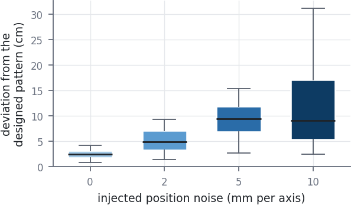
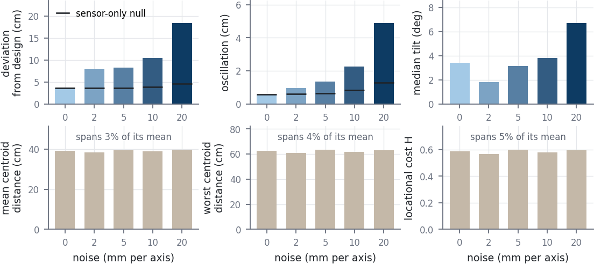
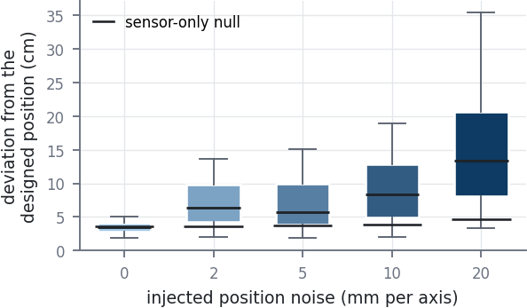
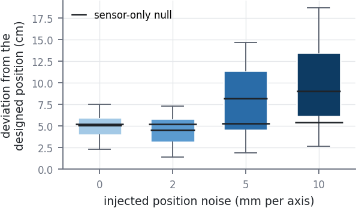
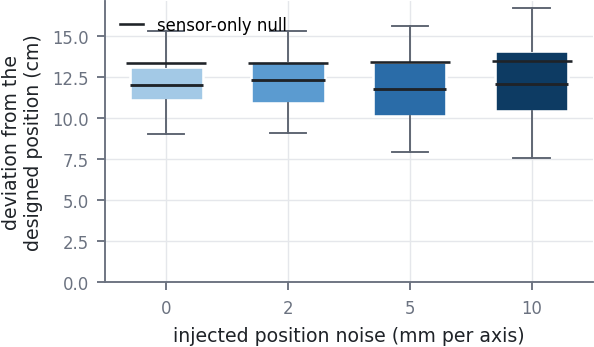

the shortlist that goes in the report, shown at the width it prints at — 3.5 in for a column, 6.5 in for full width. No figure carries a title: the caption is the title.
Fig. 1. Designed against flown position for the trochoidal law, over the first 20 s of each flight, at four of the eight gain rungs. Grey is the same configuration in the noiseless simulator, started from where the drones actually were when the algorithm engaged; colour is VICON. At k·τ 0.56 and 0.84 the aircraft sits on the designed pattern. At 1.12 a ripple appears on top of it and does not decay, and at 3.92 the pattern is barely visible beneath it. The loops in the left-hand panels have a period of about 1.1 s at every rung, set by the loop delay rather than by the gain.
Fig. 23.5 in · fig_noise_trochoidal_box.pdf · vector

Fig. 2. Deviation from the designed trochoidal pattern against injected position noise, at β = 2 where the gain ladder is quiet, so the exact-state assumption is probed on its own. Box is the middle half of the flight, whiskers the 5th to 95th percentile. Every other parameter is identical across the four flights.
Fig. 3. Designed against flown position for Voronoi coverage at three gain settings, 20 s from the middle of each flight. The label in each right panel is the median distance between the two lines over that window.
Fig. 46.5 in · fig_coverage_benchmarks.pdf · vector

Fig. 4. Coverage under injected position noise. Top row: how the aircraft flew. Deviation and oscillation are computed from the recorded position, which carries the injected noise, so each bar is shown against a sensor-only null — the control flight re-measured through that rung's noise. Tilt comes from the motion-capture pose stream, which the injection never touches. Bottom row: the three quantities the coverage result is stated in. All three span a few percent of their own mean across a ladder that moves the aircraft by a factor of five.
Fig. 53.5 in · fig_noise_coverage_box.pdf · vector

Fig. 5. Deviation from the designed coverage configuration against injected position noise, with the sensor-only null marked on each rung.
Fig. 6. Designed against flown position for Olfati-Saber flocking at three time-rescalings, 20 s from the middle of each flight. The rescaling leaves the lattice and the path unchanged and moves only the rate at which the law acts, so k·τ is the only quantity that differs between rows.
Fig. 73.5 in · fig_noise_flocking_box.pdf · vector

Fig. 7. Deviation from the designed flocking lattice against injected position noise. The control sits above the 2 mm rung; both were flown twice and reproduce to 0.3 cm, so the ordering is a real property of the ladder rather than a bad flight.
Fig. 83.5 in · fig_noise_kuramoto_box.pdf · vector

Fig. 8. Deviation from the designed ring for the Kuramoto law against injected position noise. Every rung sits on its own sensor-only null, so the injection accounts for the whole reading and the flight itself does not degrade — unlike the trochoidal and coverage ladders, which move by a factor of five under the same lever.